|
人物 |
演员 |
简介 |
| 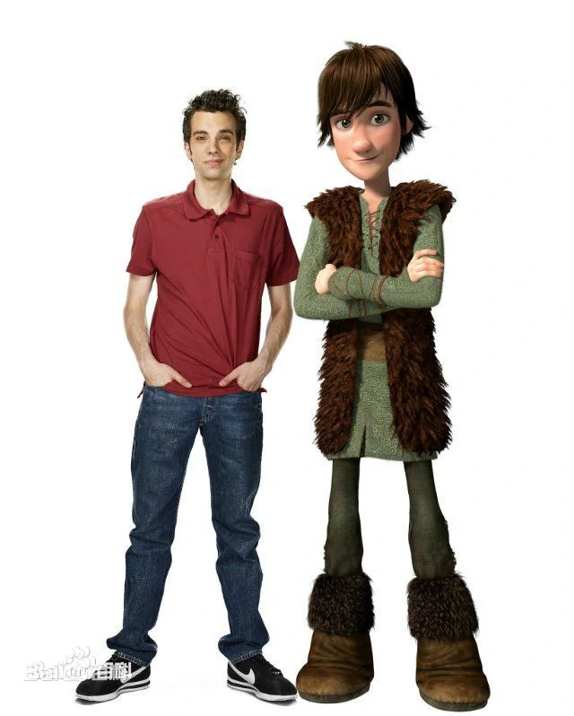 |
希卡普 |
杰伊·巴鲁切尔 |
希卡普是一个瘦弱的少年，也是维京族最勇猛的族长的儿子，他的聪明才智在族里被归为异类。 |
| 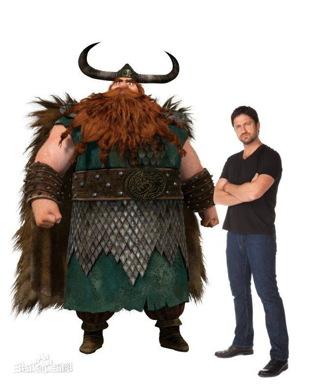 |
史图依克 |
杰拉德·巴特勒 |
史图依克是是典型的维京人领袖，他一心希望培养儿子成为接班人，但却不了解儿子的聪明才智。 |
| 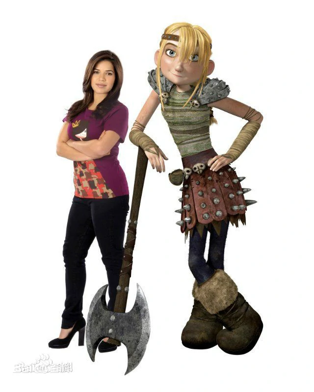 |
亚丝翠 |
亚美莉卡·费雷拉 |
热情强悍又充满活力的亚丝翠是维京女勇士，她是希卡普喜欢的人。 |
| 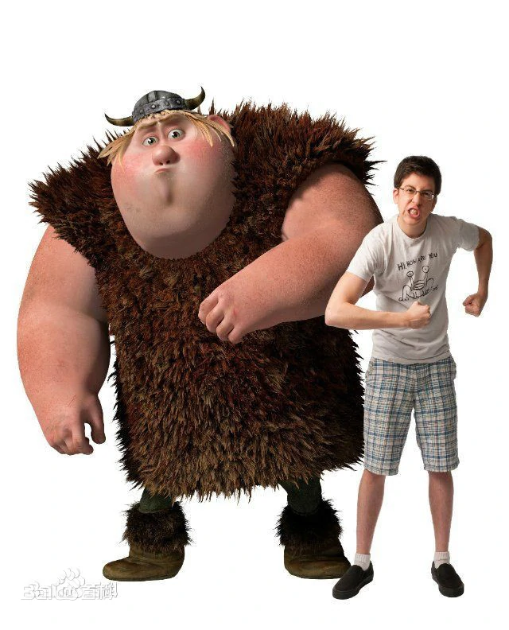 |
鱼脚司 |
克里斯托夫·梅兹-普莱瑟 |
身材高大的鱼脚司却十分胆小。 |
| 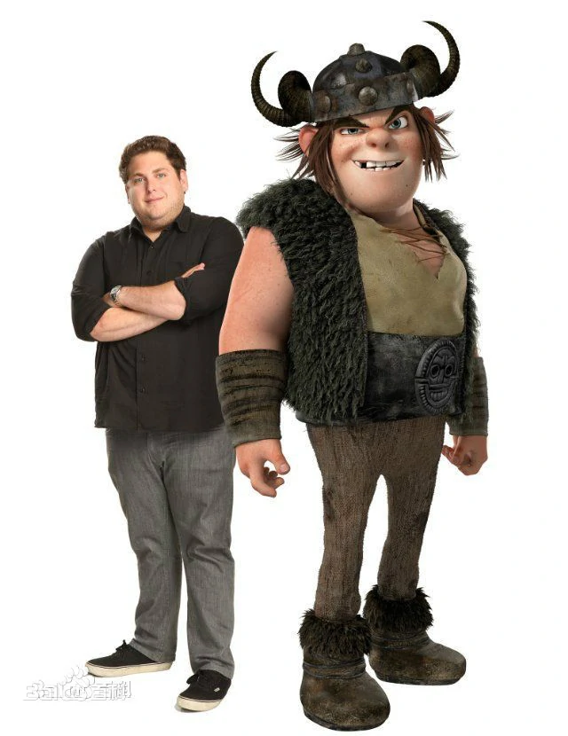 |
鼻涕粗 |
乔纳·希尔 |
鼻涕粗高大强壮、但又愚蠢，当他所谓的“女友”亚丝翠开始注意没出息的希卡普时，他就发誓一定要希卡普付出代价。 |
| 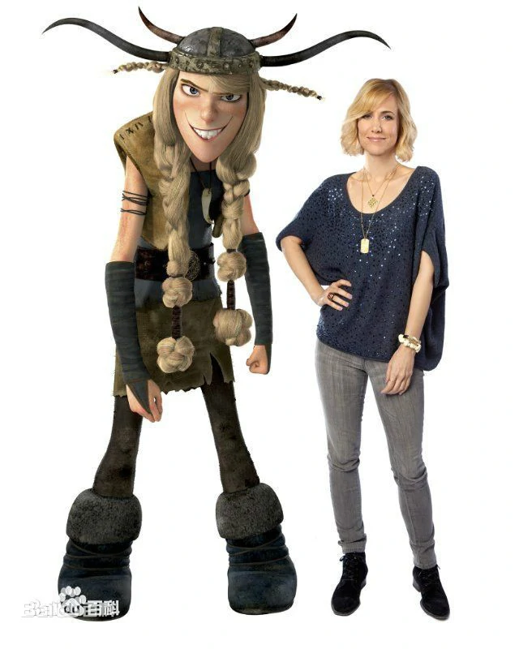 |
暴芙那特 |
克里斯汀·韦格 |
暴芙那特是女孩，也是个捣蛋鬼，最爱在危险中找乐子，完全不理别人的死活。 |
| 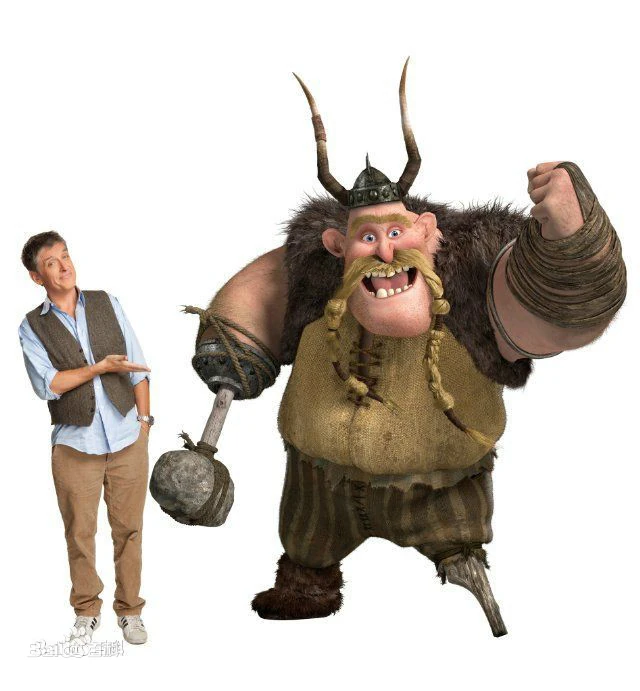 |
戈伯 |
克雷格·费格森 |
粗鲁又暴躁的戈伯负责训练维京少年们通过“驯龙考验”，是他看到了希卡普潜在的领导潜质。 |
| 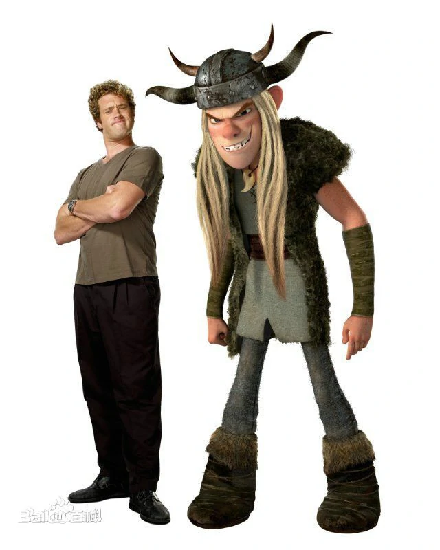 |
悍夫那特 |
T·J·米勒 |
悍夫那特和暴芙那特是对双胞胎，悍夫那特是男孩，是个爱恶作剧又心狠心辣的捣蛋鬼。 |
| 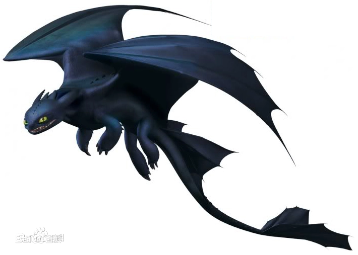 |
夜煞 |
|
龙族非常稀有且最危险聪明的龙(维京人传说是死神与雷神的后代)，体积中小；取材自日本漫画而特有平滑、颜色单一的体表，表情动作灵巧可爱；双翼比例是龙里最大，翼面多达三对，因此飞行时间更长速度更快更灵活；与其他龙所喷发的火焰不同，是伴随着电石气与氧气的幽蓝色半固态火球，在冲击或飞行一段距离后爆炸，攻击精准，堪称手术刀式打击；俯冲攻击；常出现在日落之后，利用夜间深色外皮隐身对村庄的防御塔发动精确打击而从不去抢食物；格斗技能高超，高度智慧、体型中等、飞行和攻击能力优越。 |
| 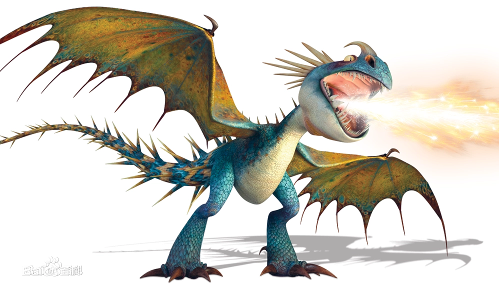 |
致命纳得 |
|
它是龙族最漂亮、精力最充沛的一员，皮肤色彩斑斓，有鹦鹉一样的习性、鸸鹋的步态和雷克斯暴龙的姿势，是鸟类的祖先。纳得的性格暴躁，经常发脾气。在对手攻击失败时，会庆幸的笑笑,然后盯着对手看看，再闻闻。闲暇时，会像鸟一样啄啄翅膀。视野较小，盲点在鼻子前面，脑袋向右转后左眼只能看左边，看不见右边。纳得满身尖刺，从而获得了一项引人注目的独特技能：它能使周身82根尖刺呈扇形弩张，形成一道防御系统；也能使利刺抽离身体，如长鞭出鞘，刺向对手。它的火力明亮得好似烟火，以镁粉助燃，在一团白色的朦胧中喷薄而出，如繁星闪烁。 |
| 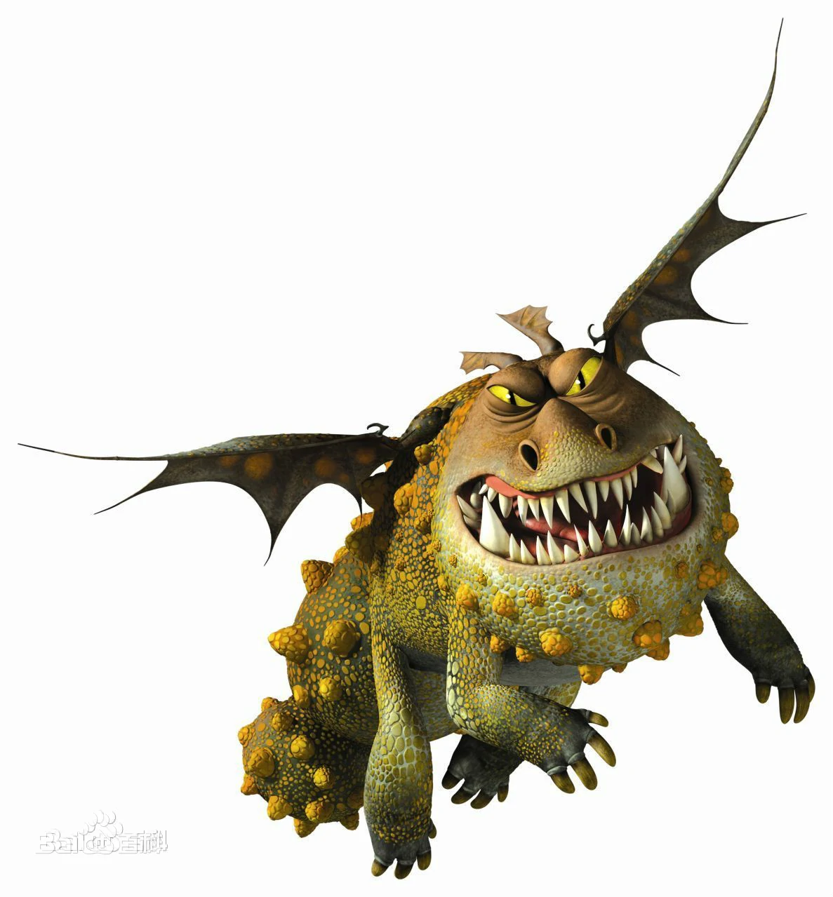 |
葛伦科 |
|
葛伦科看上去就像一堆鹅卵石一样，它的尾巴可以发出像攻城锤一样的重击，嘴巴能喷射爆炸性的熔岩球。但这种倔强的龙却酷爱睡眠，“像岩石一样沉睡”用在他身上再合适不过了。葛伦科长4米，有龙中另类的壮硕形象，飞行时伴随着摩托车一样的轰鸣。虽然它有龙类中最好的机动技能，但它的重量（平均2596千克），加上极弱的视力，使他成为最慢的飞行者之一。 |
| 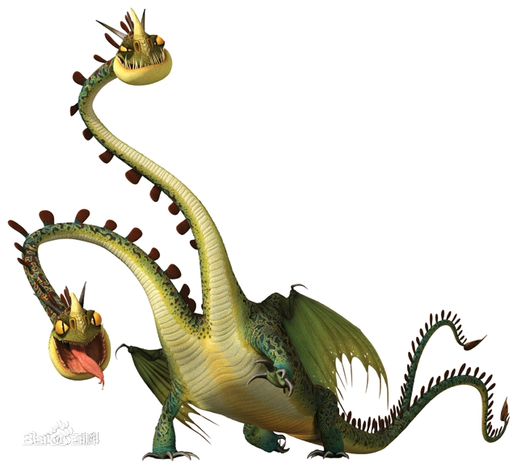 |
丑陋双头龙 |
|
除了片尾的巨兽外，它是最大的。虽然它在各种龙中拥有最好的视力和地面攻击能力，但它的身体比例极不利于他飞行——它长27.7米，翼展却只有22.9米。这种让人难以捉摸的龙还有一个劣势——它有两个独立思考的脑袋。它的两个长脖子可以像拉链一样平行合拢，也可以互相缠绕在一起。同时，还保持摆动的独立性。从技术上讲，这种龙喷的并不是火，而是一个喷出瓦斯，同时另一个头打火，将气体点燃形成爆炸。 |
| 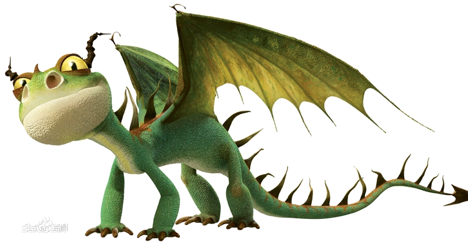 |
恐怖龙 |
|
又称骇龙，是龙族最小的龙，数量却是最多的。它长1.8dm，翼展1.8dm，可以捧在手心里。恐怖龙活泼可爱，像海鸥一样有点小邪恶，它不能飞太久。恐怖龙在地面上可以直立，火力好比丙烷火炬，喷射出黏性而不是流动的火焰。 |
| 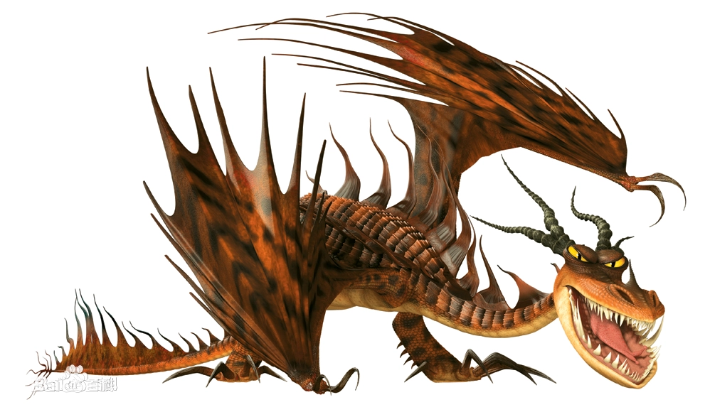 |
烈焰狂魔 |
|
烈焰狂魔是电影中对这条龙最经典的诠释——它是最凶猛、最顽固、最难对付的龙。在战斗中，它总是第一个到达、最后一个离开。在它致命的下巴上排列着97颗牙齿。这条壮观的龙有21米高，翼展18米长。早期的烈焰狂魔只有一对翅膀，后来又增加了一对，有别于龙类的“经典造型”。烈焰狂魔会像火焰喷射器一样，射出可以像液体一样向下倾泄的火焰，不像一般的火升腾而上。 |
| 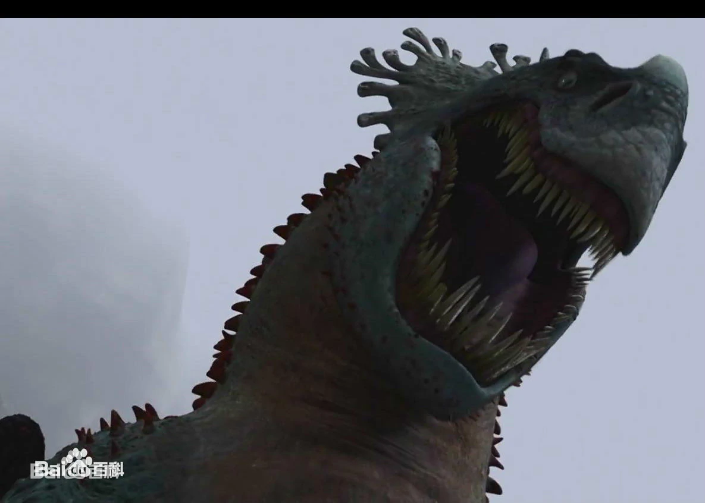 |
红死神 |
|
居住在山洞的一个岩浆池里，受到多数龙族的伺候，并且比其他大型龙族大上二十倍，龙族暴君，能吞掉纳粮不足的龙类，是维京人被龙群掠夺的根本原因,属于背翅型龙类。后来被维京人与龙族的联合攻击消灭（主要是没牙仔和希卡普的功劳）。有锤状尾，有厚重的装甲和毁灭性的火力（曾一发全歼维京舰队），能笨拙地飞行。 |